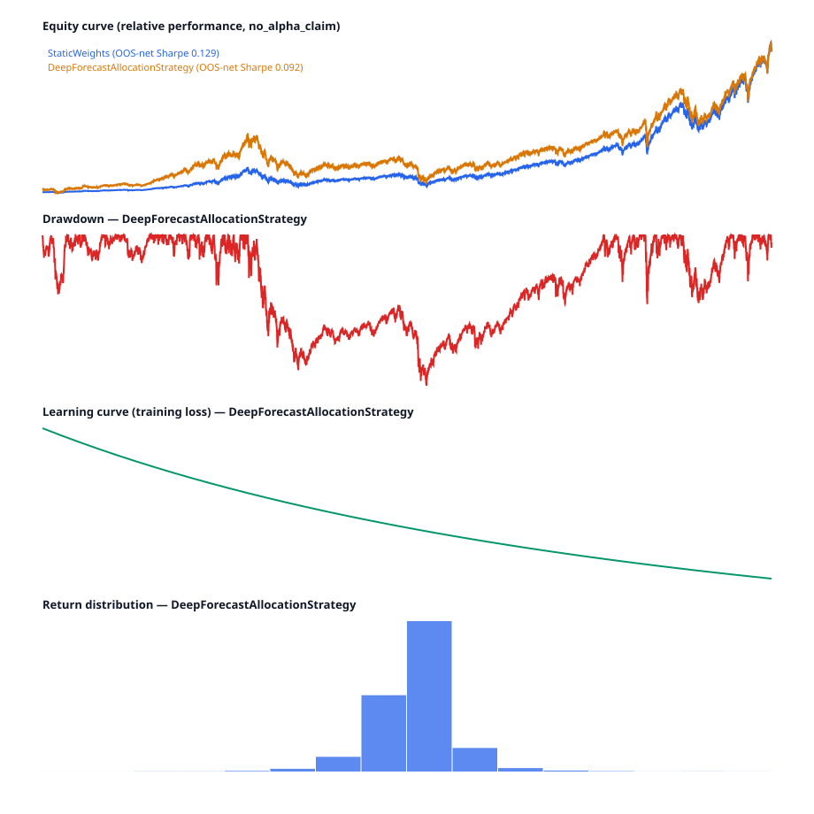

Value Proposition價值主張
One lab, two audiences — both served honestly.
一個 lab，兩種受眾 — 都誠實地服務。
🔬 For the researcher (internal)
🔬 給研究者（內部）
- Every strategy is scored against dumb baselines on out-of-sample net metrics — no in-sample self-deception.
- Point-in-time data discipline (
available_date ≤ asof) prevents lookahead by construction. - Reproducible CLI demos + a local experiment registry capture lineage.
- 每個策略都以樣本外淨值指標對笨 baseline 評分 — 沒有樣本內自我欺騙。
- Point-in-time 資料紀律（
available_date ≤ asof）從架構上防止 lookahead。 - 可重現的 CLI demo ＋ 本地實驗登錄擷取 lineage。
📈 For the stakeholder (external)
📈 給利害關係人（外部）
- A portfolio piece that demonstrates methodology honesty over hype: every slice carries
no_alpha_claim. - A read-only showcase dashboard summarizing leaderboard, regime, and allocation.
- Transparent gap reporting — demo readiness is stated, never overclaimed.
- 一件展現方法論誠實度而非炒作的作品：每個切片都標註
no_alpha_claim。 - 一個唯讀的 showcase 儀表板，彙整 leaderboard、regime 與配置。
- 透明的缺口盤點 — demo readiness 如實陳述，絕不過度宣稱。
Press Release新聞稿
Amazon-style backwards PR — written as if the lab has already succeeded.
Amazon 式回溯新聞稿 — 以 lab 彷彿已經成功的口吻撰寫。
QuantLab gives a solo quant a portfolio-grade research lab that never lies about its own results
QuantLab 讓單兵量化研究者擁有一個作品集等級、且從不對自身結果說謊的研究 lab
Taipei, 2026 — Finance Algorithms today described QuantLab, a personal research platform that lets one person design, backtest, and compare investment strategies with the same point-in-time and out-of-sample discipline used by serious shops — while refusing to dress up synthetic experiments as alpha.
台北，2026 — Finance Algorithms 今日介紹 QuantLab，一個個人研究平台，讓一個人能以與專業機構相同的 point-in-time 與樣本外紀律來設計、回測與比較投資策略 — 同時拒絕把合成實驗包裝成 alpha。
“The point was never to claim I beat the market,” the maintainer said. “The point was to build a lab where every number is reproducible, every backtest respects what I could actually have known at the time, and every demo says exactly how strong its evidence is.”
「重點從來不是宣稱我打敗了市場，」維護者說。「重點是打造一個 lab，讓每個數字都可重現、每次回測都尊重我當時真正能知道的資訊，而每個 demo 都明確說明它的證據有多強。」
The problem: personal quant projects routinely leak future information, compare strategies in-sample, and present mock dashboards as if they were live products. The solution: QuantLab enforces available_date ≤ asof in the data layer, reports out-of-sample net metrics on a shared leaderboard, and caps every stakeholder-facing claim with explicit evidence labels. Today: ten spec epics are implemented and reviewed, the default Python suite is governed by current test registry evidence, the root Python lock excludes unpatched Torch, and the showcase dashboard renders a generated local result-store scenario with no_alpha_claim.
問題：個人量化專案經常洩漏未來資訊、以樣本內比較策略，並把 mock 儀表板當成 live 產品呈現。解法：QuantLab 在資料層強制 available_date ≤ asof、在共用 leaderboard 上回報樣本外淨值指標，並以明確的證據標籤為每一項面向利害關係人的宣稱設上限。現況：九個 spec epic 已實作並審閱，預設 Python 測試套件由當前測試登錄證據治理，root Python lock 排除未修補的 Torch，而 showcase 儀表板渲染一個由本地 result-store 生成、標註 no_alpha_claim 的情境。
FAQ常見問題
Three audiences, straight answers.
三種受眾，直白回答。
Internal · How much does this cost to maintain?
It is a single Python 3.13 + Next.js workspace with uv and npm. CI-style gates (pytest, mypy, lint-imports, npm test/audit) run in seconds-to-minutes locally. No paid infra is required; external data sources are free (FRED/NOAA/Yahoo) and degrade per-source.
內部 · 維護成本有多高？
它是單一的 Python 3.13 ＋ Next.js workspace，使用 uv 與 npm。CI 式的 gate（pytest、mypy、lint-imports、npm test/audit）在本地數秒到數分鐘內完成。不需要付費基礎設施；外部資料來源（FRED/NOAA/Yahoo）皆免費，且逐 source 容錯降級。
Internal · Is it safe / compliant?
It is paper-only research with no trading execution and no credentials. Frontend audit reports 0 vulnerabilities, and the root Python lock no longer includes unpatched Torch in the default runtime. The architecture linter forbids the data/engine core from importing ML frameworks, keeping the backtest core deterministic.
內部 · 安全／合規嗎？
它是純紙上研究，沒有交易執行、也沒有任何憑證。前端 audit 回報 0 漏洞，root Python lock 在預設 runtime 中已不再包含未修補的 Torch。架構 linter 禁止 data/engine 核心匯入 ML 框架，讓回測核心維持 deterministic。
External · How is this different from a notebook?
It separates contracts, PIT data, a vectorized engine, strategy adapters, portfolio construction, and tracking into reviewed specs. Lookahead protection and out-of-sample net scoring are built into the engine, not bolted on per-experiment.
外部 · 這跟一份 notebook 有何不同？
它把 contract、PIT 資料、向量化引擎、策略 adapter、投資組合建構與追蹤拆分成經審閱的 spec。Lookahead 防護與樣本外淨值評分內建於引擎中，而非逐實驗外掛。
External · What's the 6-month roadmap?
Accumulate real price vintages until the live-data backtest unblocks, prove public hosting for the dashboard, and expand the model-family evaluation. Visual regression is already repo-side browser-proven. See the Roadmap below.
外部 · 6 個月的 roadmap 是什麼？
累積真實價格 vintage 直到 live-data 回測解除阻擋、為儀表板證明 public hosting，並擴充 model-family 評估。視覺回歸已在 repo 端以瀏覽器證明。見下方 Roadmap。
User · What does it improve for me day to day?
One command produces a baseline-anchored OOS leaderboard; one command captures an immutable daily data snapshot with a machine-readable run report; one dashboard summarizes the latest research state — all without hand-rolling lookahead-safe plumbing.
使用者 · 它在日常為我改善什麼？
一道指令產生以 baseline 為錨的 OOS leaderboard；一道指令擷取不可變的每日資料快照並附機器可讀的 run report；一個儀表板彙整最新的研究狀態 — 全程無須自行手刻 lookahead-safe 的底層管路。
Core Features核心功能
Readiness badges copied from .agents/specs/**/review.md.
Readiness badge 沿用自 .agents/specs/**/review.md。
🧱 Backtest foundation (A0)
🧱 回測基礎 (A0)
PIT data, vectorized engine, metrics, walk-forward, parallel run, local tracking.
PIT 資料、向量化引擎、metrics、walk-forward、parallel run、本地追蹤。
⚖️ TSMC hedge slice (A)
⚖️ TSMC 對沖切片 (A)
Hedge strategy + LSTM adapter + baselines, ranked by OOS net Sharpe.
對沖策略 ＋ LSTM adapter ＋ baseline，依 OOS 淨值 Sharpe 排名。
🗂️ Data platform (B)
🗂️ 資料平台 (B)
Vintage PIT loader, FRED proxies, source-health, snapshot report + ops gate, deep 1990+ approximate backfill (CR-B21).
Vintage PIT loader、FRED proxy、source-health、快照 report ＋ ops gate、深度 1990+ 近似 backfill（CR-B21）。
📐 Portfolio core (C)
📐 投資組合核心 (C)
Optimizer, multi-period allocation, regime rebalance selector, pyramid adapter.
Optimizer、多期配置、regime 再平衡選擇器、金字塔 adapter。
🧠 Model families (D)
🧠 模型家族 (D)
First-regime, return/risk forecaster, robust optimizer, family evaluator.
First-regime、報酬/風險 forecaster、robust optimizer、family evaluator。
🔭 MLOps E-lite (E)
🔭 MLOps E-lite (E)
Experiment registry, config catalog, checksum snapshot, dashboard bridge.
實驗登錄、config catalog、checksum 快照、儀表板橋接。
📊 Showcase dashboard (F)
📊 Showcase 儀表板 (F)
Read API + Next.js app: leaderboard, regime, rebalance, experiments, evidence. Browser visual proven; public-hosting hash parity is still pending for the refreshed artifact.
Read API ＋ Next.js app：leaderboard、regime、再平衡、實驗、證據。瀏覽器視覺已證明；refreshed artifact 的 public-hosting hash parity 仍待證明。
🧪 Alt-data slices (G)
🧪 Alt-data 切片 (G)
Source-contract-first local CSV loader, two optional default-disabled slices.
Source-contract 優先的本地 CSV loader，兩個 optional、預設停用的切片。
🤖 Deep-learning lab (H) — real PyTorch
🤖 深度學習 lab (H) — 真實 PyTorch
Framework-free reference MLP forecaster (H-1) + a real PyTorch training path (H-2) behind a lazy backend boundary that degrades honestly to reference when torch is absent. Parameterized experiment CLI → OOS-net report + self-contained viz + registry lineage.
框架無關的 reference MLP forecaster (H-1) ＋ 一條真實 PyTorch 訓練路徑 (H-2)，位於 lazy backend 邊界之後，torch 缺席時誠實降級為 reference。參數化實驗 CLI → OOS-net 報告 ＋ self-contained 視覺化 ＋ registry lineage。
🏛️ Legacy pyramid API
🏛️ 既有金字塔計算機 API
Arithmetic + geometric order sizing FastAPI — immutable baseline, preserved.
等差 ＋ 等比下單量的 FastAPI — 不可變基線，原樣保留。
LocalResultStore / ExperimentRegistry scenario (local_demo_only, no_alpha_claim). A real chromium-headless screenshot (browser-visual.png), repo-baseline pixel diff (browser-visual-diff.json), GitHub Actions autonomous event=schedule dry-run proof (run 27392471359), CR-B12 scoped live write smoke, and CR-B19 FRED/Yahoo/NOAA source-quorum proof are proven. After CR-B21 landed on main, GitHub Pages redeployed and public-hosting parity is proven at dataHash 0f170441… (HTTP 200, deployed==expected, observed 2026-06-15T07:07Z); the dashboard payload self-claim stays not_proven by static-artifact contract. CR-B20 proves Stooq restoration attempts fail closed without positive finite live close rows; Stooq remains governed separately.LocalResultStore / ExperimentRegistry 情境（local_demo_only、no_alpha_claim）生成。真實 chromium-headless 截圖（browser-visual.png）、repo-baseline pixel diff（browser-visual-diff.json）、GitHub Actions autonomous event=schedule dry-run 證明（run 27392471359）、CR-B12 scoped live write smoke，以及 CR-B19 FRED/Yahoo/NOAA source-quorum 證明皆已證明。CR-B21 落地 main 後，GitHub Pages 已重新部署，public-hosting parity 於 dataHash 0f170441… 為 proven（HTTP 200、deployed==expected、觀測 2026-06-15T07:07Z）；儀表板 payload self-claim 依靜態 artifact 契約維持 not_proven。CR-B20 證明 Stooq 還原嘗試在沒有正的有限 live close rows 時會 fail closed；Stooq 仍獨立治理。Real chromium-headless screenshot — frontend/out/browser-visual.png (proven, desktop-1440×900). The static export ships semantic HTML without the app stylesheet, so it renders unstyled by design.
真實 chromium-headless 截圖 — frontend/out/browser-visual.png（proven、desktop-1440×900）。靜態 artifact 僅輸出語意化 HTML、未內嵌 app 樣式表，故刻意無樣式渲染。

🤖 Deep-Learning Demo (Epic H)🤖 深度學習 Demo (Epic H)
A real PyTorch model, trained end-to-end through the backtest engine — and honest enough to admit it does not beat buy-and-hold.
一個真實的 PyTorch 模型，端到端透過回測引擎訓練 — 並且誠實到承認它沒有打敗 buy-and-hold。
What the demo proves
這個 demo 證明什麼
- The harness trains for real. With PyTorch installed, the
pytorchbackend computes the MLP forward/backward via torch autograd (float64), reached through a lazy backend dispatch — the engine/data core never imports a framework (import-linter enforced). - Parity, not a second model. Seed-initialised identically to the framework-free reference, the torch forecasts agree with it within a documented
1e-3tolerance, and the run is deterministic. - Honest degradation. Without torch (the default lock), the same call falls back to the deterministic
referencebackend — never raises — so the default build stays green. - No alpha. Over a deep multi-cycle window the trained model under-performs the dumb baseline on OOS-net Sharpe. That is the point: methodology honesty over hype.
- 這套 harness 真的會訓練。裝了 PyTorch 後，
pytorchbackend 以 torch autograd（float64）計算 MLP 前向/反向，經由 lazy backend dispatch 觸發 — engine/data 核心永不匯入框架（import-linter 強制）。 - 是 parity，不是第二個模型。與框架無關的 reference 用相同 seed 初始化，torch 預測與其在
1e-3容差內一致，且結果 deterministic。 - 誠實降級。沒有 torch（預設 lock）時，同一呼叫回退到 deterministic 的
referencebackend — 永不 raise — 預設 build 維持綠燈。 - 沒有 alpha。在深度多週期區間，訓練後的模型在 OOS-net Sharpe 上輸給笨 baseline。這正是重點：方法論誠實度勝於炒作。
Flagship experiment — OOS-net leaderboard
旗艦實驗 — OOS-net 排行榜
Seed/demo data: CR-B21 deep vintage {^GSPC, ^IXIC} 1990→2026 (approximate, NOT true PIT, strict-excluded). Params: backend=pytorch, hidden=8, lookback=6, epochs=40, seed=0. experiment_id 1e893d7d….
Seed/demo 資料：CR-B21 深度 vintage {^GSPC, ^IXIC} 1990→2026（近似、非 true PIT、strict 排除）。參數：backend=pytorch, hidden=8, lookback=6, epochs=40, seed=0。experiment_id 1e893d7d…。
| Strategy | OOS-net Sharpe | Max DD | Role |
|---|---|---|---|
| StaticWeights (buy & hold) | +0.1292 | −65.4% | baseline |
| DeepForecast (PyTorch MLP) | +0.0919 | −71.0% | model |
Learning curve (per-epoch MSE): 0.9997 → 0.9975, monotone decreasing over 40 epochs — the model genuinely trained. Both backends produce this same shape within tolerance.
學習曲線（每 epoch MSE）：0.9997 → 0.9975，40 epoch 單調下降 — 模型確實有訓練。兩個 backend 在容差內產生相同形狀。
out/dl-demo/exp-torch-gspc-ixic.json, checksum b73b21e9…) + live_command_output · h-deep-learning-real-training/review.mdSelf-contained statistical performance report (return distribution, rolling Sharpe, drawdown, learning curve) — rendered offline, no CDN. Generated by scripts/run_dl_experiment.py from the canonical experiment artifact.
Self-contained 統計效能報告（報酬分布、rolling Sharpe、drawdown、學習曲線）— 離線渲染、無 CDN。由 scripts/run_dl_experiment.py 從 canonical 實驗 artifact 生成。

is_approximate=true backfill (NOT true point-in-time; strict PIT mode excludes it) and the experiment runs in research (approximate_availability=True) mode. PyTorch is an optional lane kept out of the default lock; the real-training run is captured in a torch-enabled UAT (full suite 430 passed, lane 4 passed, 2 mutations KILLED). Everything is no_alpha_claim — mechanism evidence, not a strategy verdict.is_approximate=true backfill（非 true point-in-time；strict PIT 模式排除），實驗以 research（approximate_availability=True）模式執行。PyTorch 為選用 lane，不納入預設 lock；真實訓練在 torch-enabled UAT 中擷取（full suite 430 passed、lane 4 passed、2 mutations KILLED）。一切皆 no_alpha_claim — 機制證據，非策略判定。UX FlowUX 流程
From data capture to a stakeholder-readable summary — the pipeline (also the accessible text equivalent of the diagram): daily_snapshot.py (PIT capture) → vintage loader (available_date ≤ asof) → A0 vectorized backtest engine → OOS-net leaderboard (vs baselines) → E-lite registry (lineage) → Showcase read API (/api/showcase) → Next.js dashboard (static export). The diagram below is an inline SVG (self-contained; renders offline, no CDN).
從資料擷取到利害關係人可讀的摘要 — 整條 pipeline（亦即下圖的 accessible 文字等價）：daily_snapshot.py (PIT capture) → vintage loader (available_date ≤ asof) → A0 vectorized backtest engine → OOS-net leaderboard (vs baselines) → E-lite registry (lineage) → Showcase read API (/api/showcase) → Next.js dashboard (static export)。下圖為 inline SVG（self-contained；可離線渲染、無 CDN）。
Gap Analysis缺口盤點
Resolved since last check vs still open — no false greens.
自上次檢查以來已解決 vs 仍未解決 — 沒有 false green。
✅ Resolved (2026-06-11 → 2026-06-18)
✅ 已解決 (2026-06-11 → 2026-06-18)
- Deep historical backfill landed (CR-B21): the research vintage now reaches 1990 (Yahoo deep indices + full FRED + NOAA;
is_approximate=true, strict-excluded, 24/24 sources, fail=0). It enables a real multi-cycle backtest (deep {^GSPC,^IXIC} 1990→2026, 437 months,computed) and the data validates against the real record — dot-com −49%/−78%, GFC −57%, COVID −34%, 2022 −25%.no_alpha_claim; the residual 6 FRED rate/FX series (incl.T10Y2Y) were captured by an idempotent re-run → regime family now full-feature data - Epic H deep-learning real training landed (H-2): the
pytorchbackend now actually trains the reference MLP via torch autograd (lazy, float64, seed-init parity ≤1e-3, deterministic) through an additive backend dispatch; optional default-skipped torch lane with honestreferencefallback; framework-isolation (import-linter "DL backend boundary") KEPT. Torch UAT: full suite 430 passed, lane 4 passed, 2 mutations KILLED. The model honestly under-performs buy-and-hold on OOS-net (no_alpha_claim) model - Dashboard re-pinned for the H-2 count resync: payload regenerated (
dataHash 4237842a…), static visual baseline re-pinned (htmlHash74e23199…), browser-visual re-pinned (16eff6f5…, 0-pixel, deterministic). Committed hosting honestly reverts toconfigured_not_observeduntil GitHub Pages serves the new hash (last live-proven0f170441…) visual - Python suite now 425 passed; mypy clean over 69 files; mutation spot checks 118/118 configured, including the CR-RDO-004 real-data OOS sampling-frequency oversampling guard, root Torch dependency, demo result-store close gates, stale governance evidence mutations plus the non-self-staling promotion-boundary guard, local-first CI default and skill-body guards, governance refresh review stale-evidence regression, CR-FPS-001/CR-FPS-002/CR-FPS-003/CR-FPS-007/CR-FPS-008/CR-FPS-009 public-hosting manifest/probe/review-probe/hash/contract/taxonomy drift, stakeholder and app payload copy drift, retired F fixture marker drift, superseded F CR fixture-boundary drift, public probe expected-hash drift, review pytest/frontend-count/coverage/audit transcript, import-linter count/formalization drift, governance registry row-count drift, E production proof/identity-scheme/manifest/experiment-binding/retraining-artifact URI/artifact-scheme/observed-at UTC/drift-threshold gates, CR-B18 broad source-quorum overclaim protection, CR-B19 proof replay protection, and CR-B20 Stooq proof exit/file replay protection gate
- Frontend 46 tests pass, coverage 90.00%, 0 dependency vulnerabilities, and frontend mutation 26/26 killed including
frontend-smoke-html-api-parity-regressiongate - Live chromium-headless screenshot captured (
browser-visual.pngproven) visual - Dashboard payload source hardened generated from local result-store records with source metadata; local smoke checks HTML/API payload parity hosting
- Public hosting re-proven at
dataHash 0f170441…(live probestatus=proven, deployed==expected, HTTP 200; re-proven after CR-B21 landed, PR #104). The dashboard self-claim staysnot_provenby static-artifact contract;provenis a point-in-time observation re-proved per deploy hosting - Real-data OOS-net demo re-captured (2026-06-15): 12-asset co-temporal
computedcomparison (universe widened by the CR-B21 backfill) plus the CR-RDO-004 sampling-frequency and degeneracy fail-closed paths; manual Flow 5 updated and new Flow 6 added underno_alpha_claimdocs - Front + back services live-verified (2026-06-15): Next.js dashboard smoke
PASS(served/+/api/showcaseon an ephemeralnext start) and the legacy FastAPI pyramid calculator returned a real arithmetic-pyramid response (/api/pyramidArithmetic); transcripts underdocs/manual/assets/ops - Docs visually render-validated (2026-06-15, headless chromium
1440×3400): manual (en/zh, now including the new Flow 6 historical backfill) and this review render cleanly — hero/stat cards, feature cards, evidence captions/badges, and code blocks all intact, no broken CSS or assets. The UX-flow diagram is now a self-contained inline SVG (renders offline /file://, no CDN or client-side JS), with an accessible text-equivalent pipeline caption visual - Visual diff repo-baseline pixel-backed (
0 / 1,296,000mismatched pixels at threshold0.001) visual - Autonomous schedule proof captured (Actions run
27392471359, artifactsnapshot-schedule-proof) ops - Scoped live snapshot write smoke proven (CR-B12:
fred_FEDFUNDSwrite, then same-day skip) ops - Broad source-quorum gate and live proof captured (CR-B18/CR-B19: scoped/dry/failed/replayed reports cannot prove broad readiness); Stooq proof fails closed (CR-B20: HTTP 404 remains
not_proven) ops - First committed
docs/manual + review + generation guides docs - Import-linter contract KEPT (88 files / 242 deps); engine/data framework-agnostic arch
- 深度歷史回填已落地（CR-B21）：研究用 vintage 現可回溯至 1990（Yahoo 深度指數 ＋ 完整 FRED ＋ NOAA；
is_approximate=true、strict 模式排除、24/24 sources、fail=0）。可進行真實多週期回測（深度 {^GSPC,^IXIC} 1990→2026、437 個月、computed），且資料對照真實紀錄驗證 — 網路泡沫 −49%/−78%、GFC −57%、COVID −34%、2022 −25%。no_alpha_claim；先前限流的 6 條 FRED rate/FX 系列（含T10Y2Y）已由 idempotent 重跑補齊 → regime family 現為 full-feature data - Epic H 深度學習真實訓練落地（H-2）：
pytorchbackend 現在真的會訓練 reference MLP（torch autograd、lazy、float64、seed-init parity ≤1e-3、deterministic），經由 additive backend dispatch；選用且預設跳過的 torch lane，torch 缺席時誠實回退reference；framework-isolation（import-linter「DL backend boundary」）KEPT。Torch UAT：full suite 430 passed、lane 4 passed、2 mutations KILLED。模型在 OOS-net 上誠實輸給 buy-and-hold（no_alpha_claim） model - 儀表板因 H-2 count resync 重新 pin：payload 重新生成（
dataHash 4237842a…）、static visual baseline 重新 pin（htmlHash74e23199…）、browser-visual 重新 pin（16eff6f5…、0-pixel、deterministic）。committed hosting 誠實回退為configured_not_observed，直到 GitHub Pages 提供新 hash（最後 live-proven0f170441…） visual - Python 測試套件現為 425 passed；mypy 在 61 檔上 clean；mutation spot checks 118/118 configured，包含 CR-RDO-004 真實資料 OOS sampling-frequency oversampling guard、root Torch dependency、demo result-store close gates、stale governance evidence mutations 與 non-self-staling promotion-boundary guard、local-first CI default 與 skill-body guards、governance refresh review stale-evidence regression、CR-FPS-001/CR-FPS-002/CR-FPS-003/CR-FPS-007/CR-FPS-008/CR-FPS-009 public-hosting manifest/probe/review-probe/hash/contract/taxonomy drift、stakeholder 與 app payload copy drift、retired F fixture marker drift、superseded F CR fixture-boundary drift、public probe expected-hash drift、review pytest/frontend-count/coverage/audit transcript、import-linter count/formalization drift、governance registry row-count drift、E production proof/identity-scheme/manifest/experiment-binding/retraining-artifact URI/artifact-scheme/observed-at UTC/drift-threshold gates、CR-B18 broad source-quorum overclaim 防護、CR-B19 proof replay 防護，以及 CR-B20 Stooq proof exit/file replay 防護 gate
- 前端 46 tests pass，coverage 90.00%，0 個 dependency 漏洞，前端 mutation 26/26 killed，包含
frontend-smoke-html-api-parity-regressiongate - 已擷取 live chromium-headless 截圖（
browser-visual.pngproven） visual - Dashboard payload source 已強化，由本地 result-store records 加上 source metadata 生成；local smoke 檢查 HTML/API payload parity hosting
- Public hosting 已重新證明，於
dataHash 0f170441…（live probestatus=proven、deployed==expected、HTTP 200；CR-B21 落地後重新證明，PR #104）。儀表板 self-claim 依靜態 artifact 契約維持not_proven；proven為 point-in-time 觀測，每次部署重新證明 hosting - 真實資料 OOS-net demo 已重新擷取（2026-06-15）：12-asset co-temporal
computed比較（universe 因 CR-B21 backfill 擴大）加上 CR-RDO-004 sampling-frequency 與 degeneracy fail-closed 路徑；手冊流程 5 已更新並新增流程 6，皆在no_alpha_claim下 docs - 前後端服務已 live 驗證（2026-06-15）：Next.js dashboard smoke
PASS（在 ephemeralnext start上提供/＋/api/showcase），既有 FastAPI 金字塔計算機回傳真實等差金字塔結果（/api/pyramidArithmetic）；transcript 位於docs/manual/assets/ops - 文件已視覺渲染驗證（2026-06-15，headless chromium
1440×3400）：手冊（en/zh，現含新增的 Flow 6 歷史回填）與本審閱皆正常渲染 — hero/stat cards、feature cards、evidence caption/badge 與 code block 皆完整，無破版 CSS 或 asset。UX-flow 圖現為 self-contained inline SVG（可離線 /file://渲染，無 CDN 或 client-side JS），並附 accessible 文字等價 pipeline caption visual - Visual diff repo-baseline pixel-backed（
0 / 1,296,000mismatched pixels，threshold0.001） visual - 已擷取 autonomous schedule 證明（Actions run
27392471359，artifactsnapshot-schedule-proof） ops - Scoped live snapshot write smoke 已證明（CR-B12：
fred_FEDFUNDS寫入，再同日 skip） ops - Broad source-quorum gate 與 live proof 已擷取（CR-B18/CR-B19：scoped/dry/failed/replayed report 無法證明 broad readiness）；Stooq proof fail closed（CR-B20：HTTP 404 維持
not_proven） ops - 首次 commit 的
docs/手冊 ＋ 審閱 ＋ generation guides docs - Import-linter contract KEPT（78 檔 / 201 deps）；engine/data 與框架無關 arch
⏳ Still open
⏳ 仍未解決
- No CI-managed visual baseline history beyond the repo baseline Low
- Stooq source contract remains separate from the proven FRED/Yahoo/NOAA source quorum Low
- Static export's public-hosting readiness remains conservative (
not_proven) by dashboard contract; visual regression is repo-side proven Low - Live-data backtest deferred until ≥2 real price assets accumulate Low
- Stooq source blocked — external/source-contract (
ISSUE-B3-001) Low - Full Tier3 MLOps (serving / retraining / drift) deferred by design Low
- 除 repo baseline 外尚無 CI-managed visual baseline history Low
- Stooq source contract 仍與已證明的 FRED/Yahoo/NOAA source quorum 分開治理 Low
- 靜態 artifact 的 public-hosting readiness 依儀表板契約維持保守（
not_proven）；視覺回歸已在 repo 端證明 Low - Live-data 回測延後至累積 ≥2 個真實價格資產 Low
- Stooq source blocked — external/source-contract（
ISSUE-B3-001） Low - 完整 Tier3 MLOps（serving / retraining / drift）依設計延後 Low
RoadmapRoadmap
Next milestones, in order.
後續里程碑，依序排列。
dataHash 0f170441… (live probe status=proven; re-proven after CR-B21, PR #104) while the dashboard self-claim stays not_proven by contract; deployment manifest/probe/review-probe/hash/contract, review pytest transcript, review frontend-count shorthand, local-first CI default, and promotion-boundary drift guarded; autonomous cron dry-run proof, CR-B12 scoped live-write smoke, CR-B18/CR-B19 source-quorum gate/proof, CR-B20 Stooq fail-closed proof, and occupied-3044 smoke-port chaos proof captured; default Python lock excludes Torch.dataHash 0f170441… 重新證明（live probe status=proven；CR-B21 落地後重新證明，PR #104），而儀表板 self-claim 依契約維持 not_proven；deployment manifest/probe/review-probe/hash/contract、review pytest transcript、review frontend-count shorthand、local-first CI default 與 promotion-boundary drift 皆已守門；autonomous cron dry-run 證明、CR-B12 scoped live-write smoke、CR-B18/CR-B19 source-quorum gate/proof、CR-B20 Stooq fail-closed 證明，以及 occupied-3044 smoke-port chaos 證明皆已擷取；預設 Python lock 排除 Torch。run_vintage_slice.py live backtest.run_vintage_slice.py live 回測的阻擋。